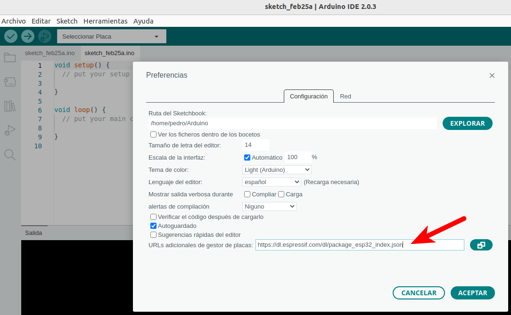
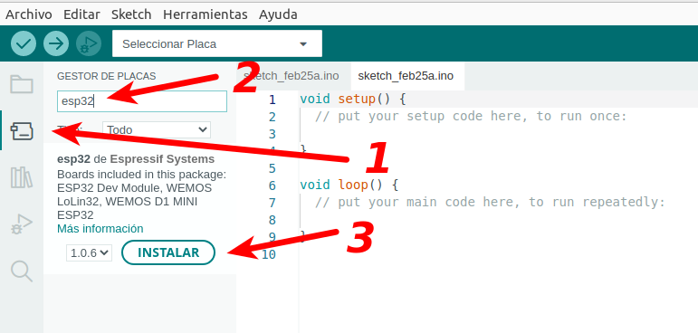
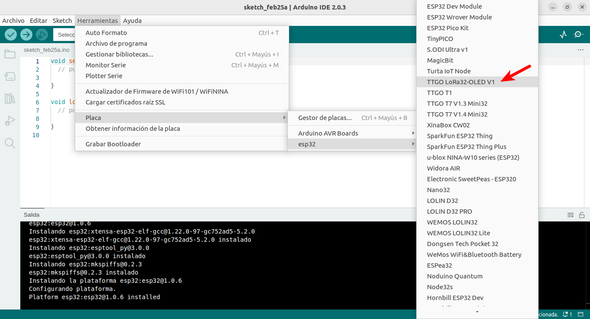

- Instalamos IDE de Arduino, desde aquí.
- Desde el Menú Archivo>Preferencias, añadimos en URL's adicionales de gestor de placas: https://dl.espressif.com/dl/package_esp32_index.json, esto pone a disposición del usuario las placas esp32.
- Hacemos clic en el gestor de placas (1) y en el buscador de placas buscamos esp32 (2), e instalamos esp32 de espressif systems (3).
- Ahora toca seleccionar la placa en el menú Herramientas>Placa>esp32>TTGO-LoRa32 OLED V1.
- Necesitamos instalar una serie de librerías para trabajar con la pantalla OLED y el chip LoRa, y para ello, nos vamos a Herramientas > Gestionar Bibliotecas y tenemos que instalar las siguientes: buscamos “SSD1306” e instalamos la que pone Adafruit SSD1306 by Adafruit, Buscamos “GFX” e instalamos Adafruit GFX Library by Adafruit y Buscamos “LoRa” e instalamos LoRa by Sandeep Minstry.